RBE 501 HW 2B
Contents
Question 7
The following is a function that plots the 3D Stick figure of the arm and and outputs a transformation matrix.
function T = plotarm(q1, q2, q3, q4, q5, q6) [Origin, TT] = main2(q1, q2, q3, q4, q5, q6-180); TT = double(TT); T = TT(:,:,6); x = []; y = []; z = []; for i = 1:7 x = [x; Origin(i,1)]; y = [y; Origin(i,2)]; z = [z; Origin(i,3)]; end figure plot3(x, y, z, '-o','Color','b','MarkerSize',5,'MarkerFaceColor','#FF00FF') axis([-1000 1000 -1000 1000 0 1400]) hold on Fo = TT(:,:,6) * [0; 0; 0; 1]; Fx = TT(:,:,6) * [100; 0; 0; 1]; Fy = TT(:,:,6) * [0; 100; 0; 1]; Fz = TT(:,:,6) * [0; 0; 100; 1]; plot3([Fo(1), Fx(1)], [Fo(2), Fx(2)], [Fo(3), Fx(3)], 'Color', 'r') plot3([Fo(1), Fy(1)], [Fo(2), Fy(2)], [Fo(3), Fy(3)], 'Color', 'g') plot3([Fo(1), Fz(1)], [Fo(2), Fz(2)], [Fo(3), Fz(3)], 'Color', 'b') txt = {'X'}; text(Fx(1), Fx(2), Fx(3) ,txt) txt = {'Y'}; text(Fy(1), Fy(2), Fy(3) ,txt) txt = {'Z'}; text(Fz(1), Fz(2), Fz(3) ,txt) hold off end
Extra Credits
The stick model has been replaced by imported CAD data
function T = plotarmcad(q1, q2, q3, q4, q5, q6) [Origin, TT] = main2(q1, q2, q3, q4, q5, 180 + q6); TT = double(TT); T = TT(:,:,6); base = stlread("Base.STL"); l1 = stlread("Link1.STL"); l2 = stlread("Link2.STL"); l3 = stlread("Link3.STL"); l4 = stlread("Link4.STL"); l5 = stlread("Link5.STL"); l6 = stlread("Link6.STL"); x = []; y = []; z = []; for i = 1:7 x = [x; Origin(i,1)]; y = [y; Origin(i,2)]; z = [z; Origin(i,3)]; end TT0 = [ 1 0 0 0; 0 0 -1 0; 0 1 0 0; 0 0 0 1]; TT1 = [ 1 0 0 0; 0 -1 0 0; 0 0 -1 0; 0 0 0 1]; TT2 = [ 0 -1 0 0; 1 0 0 0; 0 0 1 0; 0 0 0 1]; TT3 = [ 1 0 0 0; 0 0 -1 0; 0 1 0 0; 0 0 0 1]; TT4 = [ -1 0 0 0; 0 0 1 -30; 0 -1 0 0; 0 0 0 1]; TT5 = [ 1 0 0 0; 0 0 -1 0; 0 1 0 -120; 0 0 0 1]; TT6 = [ 1 0 0 0; 0 1 0 0; 0 0 1 -100; 0 0 0 1]; A(:,:,1) = [TT(1:3,1:3,1) [0; 0; 0]; 0 0 0 1]; for j = 2:6 A(:,:,j) = [TT(1:3,1:3,j) TT(1:3, 4,j-1); 0 0 0 1]; end b_points = transpose(TT0 * transpose(cart2hom(base.Points))); b_new = triangulation(base.ConnectivityList, b_points(:,1:3)); l1_points = transpose(A(:,:,1)* TT1 * transpose(cart2hom(l1.Points))); l1_new = triangulation(l1.ConnectivityList, l1_points(:,1:3)); l2_points = transpose(A(:,:,2) * TT2 * transpose(cart2hom(l2.Points))); l2_new = triangulation(l2.ConnectivityList, l2_points(:,1:3)); l3_points = transpose(A(:,:,3) * TT3 * transpose(cart2hom(l3.Points))); l3_new = triangulation(l3.ConnectivityList, l3_points(:,1:3)); l4_points = transpose( A(:,:,4) * TT4 * transpose(cart2hom(l4.Points))); l4_new = triangulation(l4.ConnectivityList, l4_points(:,1:3)); l5_points = transpose(A(:,:,5) * TT5 * transpose(cart2hom(l5.Points))); l5_new = triangulation(l5.ConnectivityList, l5_points(:,1:3)); l6_points = transpose(A(:,:,6) * TT6 * transpose(cart2hom(l6.Points))); l6_new = triangulation(l6.ConnectivityList, l6_points(:,1:3)); figure trimesh( b_new, 'EdgeColor', [0 0 0], 'LineStyle', '--', 'FaceColor', [0 0 0], 'FaceAlpha', '0.5') hold on trimesh( l1_new, 'EdgeColor', [1 0 0], 'LineStyle', '--', 'FaceColor', [1 0 0], 'FaceAlpha', '0.5') trimesh( l2_new, 'EdgeColor', [0 1 0], 'LineStyle', '--', 'FaceColor', [0 1 0], 'FaceAlpha', '0.5') trimesh( l3_new, 'EdgeColor', [0 0 1], 'LineStyle', '--', 'FaceColor', [0 0 1], 'FaceAlpha', '0.5') trimesh( l4_new, 'EdgeColor', [1 1 0], 'LineStyle', '--', 'FaceColor', [1 1 0], 'FaceAlpha', '0.5') trimesh( l5_new, 'EdgeColor', [1 0 1], 'LineStyle', '--', 'FaceColor', [1 0 1], 'FaceAlpha', '0.5') trimesh( l6_new, 'EdgeColor', [0 1 1], 'LineStyle', '--', 'FaceColor', [0 1 1], 'FaceAlpha', '0.5') xlabel('x') ylabel('y') zlabel('z') axis([-800 800 -800 800 -800 800]) Fo = TT(:,:,6) * [0; 0; 0; 1]; Fx = TT(:,:,6) * [100; 0; 0; 1]; Fy = TT(:,:,6) * [0; 100; 0; 1]; Fz = TT(:,:,6) * [0; 0; 100; 1]; plot3([Fo(1), Fx(1)], [Fo(2), Fx(2)], [Fo(3), Fx(3)], 'Color', 'r') plot3([Fo(1), Fy(1)], [Fo(2), Fy(2)], [Fo(3), Fy(3)], 'Color', 'g') plot3([Fo(1), Fz(1)], [Fo(2), Fz(2)], [Fo(3), Fz(3)], 'Color', 'b') txt = {'X'}; text(Fx(1), Fx(2), Fx(3) ,txt) txt = {'Y'}; text(Fy(1), Fy(2), Fy(3) ,txt) txt = {'Z'}; text(Fz(1), Fz(2), Fz(3) ,txt) %shading interp hold off end
Question 8
function main()
%*Configuration 1*
T = plotarm(0,30,-30,0,0,0)
T =
0 0 1.0000 509.0000
0 1.0000 0 0
-1.0000 0 0 593.8269
0 0 0 1.0000
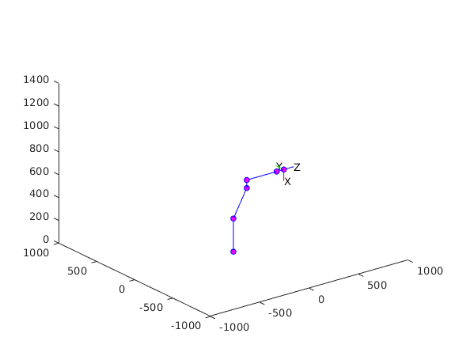 T = plotarmcad(0,30,-30,0,0,0);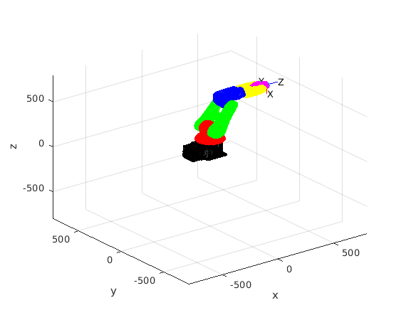
eul = rotm2eul(T(1:3,1:3), 'zyx'); eul = [rad2deg(eul(3)) rad2deg(eul(2)) rad2deg(eul(1))]; disp('End Effector Position in mm') disp(T(1:3,4)) disp('Angles in degrees') disp(eul)
End Effector Position in mm
509.0000
0
593.8269
Angles in degrees
0 90 0
%Comparing these configurations with the output from Robot Studio
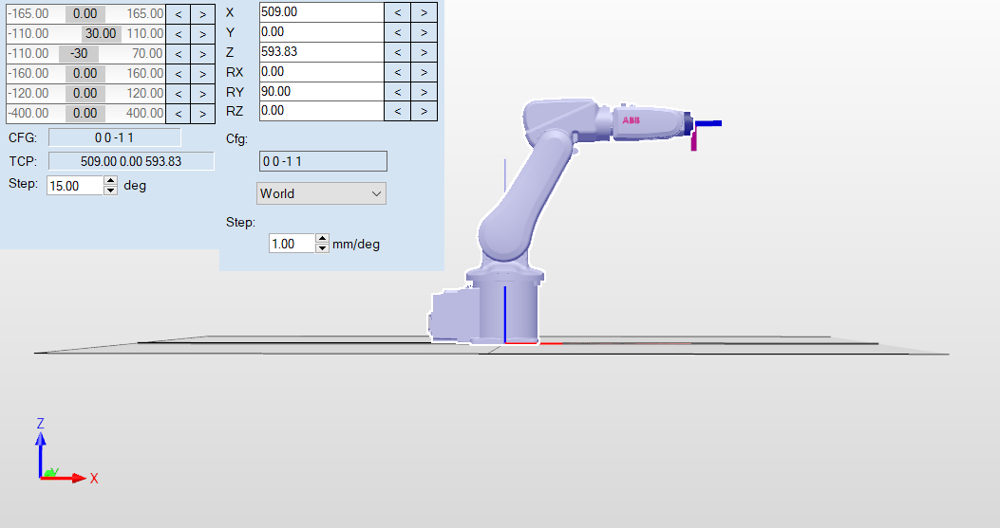
%*Configuration 2*
T = plotarm(0,30,-30,60,-45,0)
T =
0.7071 0 0.7071 487.9117
0.6124 0.5000 -0.6124 -44.0908
-0.3536 0.8660 0.3536 619.2827
0 0 0 1.0000
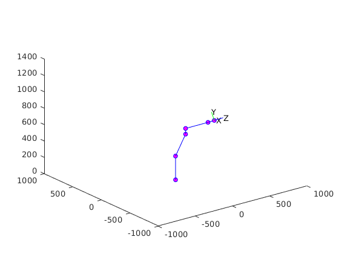 T = plotarmcad(0,30,-30,60,-45,0);
eul = rotm2eul(T(1:3,1:3), 'zyx'); eul = [rad2deg(eul(3)) rad2deg(eul(2)) rad2deg(eul(1))]; disp('End Effector Position in mm') disp(T(1:3,4)) disp('Angles in degrees') disp(eul)
End Effector Position in mm 487.9117 -44.0908 619.2827 Angles in degrees 67.7923 20.7048 40.8934
%Comparing these configurations with the output from Robot Studio
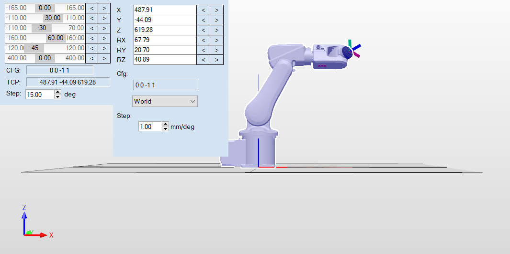
%*Configuration 3*
T = plotarm(-30,30,-30,60,-45,30)
T =
0.9205 -0.2428 0.3062 400.4985
0.3696 0.2866 -0.8839 -282.1396
0.1268 0.9268 0.3536 619.2827
0 0 0 1.0000
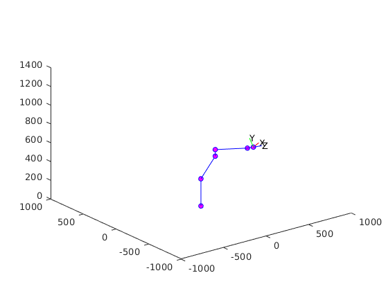 T = plotarmcad(-30,30,-30,60,-45,30);
eul = rotm2eul(T(1:3,1:3), 'zyx'); eul = [rad2deg(eul(3)) rad2deg(eul(2)) rad2deg(eul(1))]; disp('End Effector Position in mm') disp(T(1:3,4)) disp('Angles in degrees') disp(eul)
End Effector Position in mm 400.4985 -282.1396 619.2827 Angles in degrees 69.1188 -7.2862 21.8766
%Comparing these configurations with the output from Robot Studio
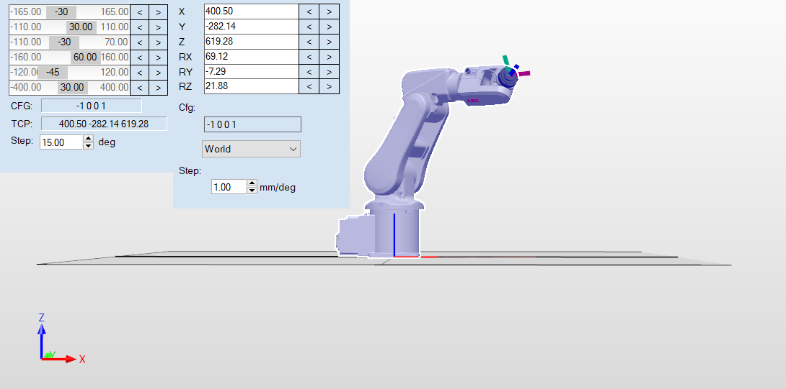
%*Configuration 4*
T = plotarm(0,-30,30,0,0,0)
T =
0 0 1.0000 239.0000
0 1.0000 0 0
-1.0000 0 0 593.8269
0 0 0 1.0000
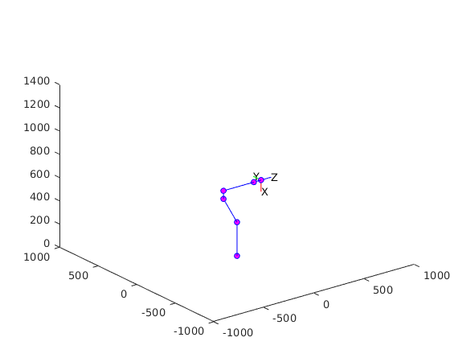 T = plotarmcad(0,-30,30,0,0,0);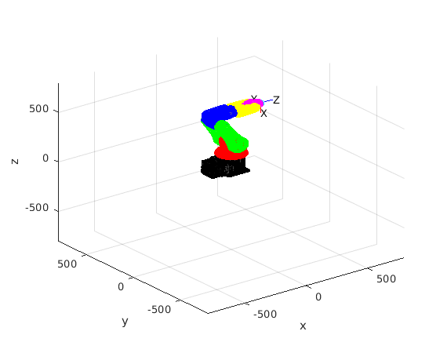
eul = rotm2eul(T(1:3,1:3), 'zyx'); eul = [rad2deg(eul(3)) rad2deg(eul(2)) rad2deg(eul(1))]; disp('End Effector Position in mm') disp(T(1:3,4)) disp('Angles in degrees') disp(eul)
End Effector Position in mm
239.0000
0
593.8269
Angles in degrees
0 90 0
%Comparing these configurations with the output from Robot Studio
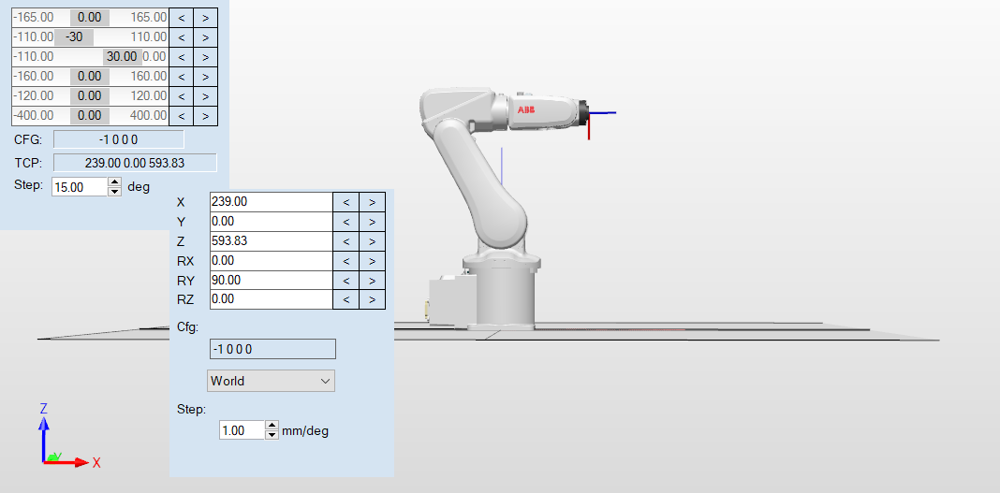
%*Configuration 5*
T = plotarm(0,-30,30,90,-90,-90)
T =
0 1.0000 0 167.0000
0 0 -1.0000 -72.0000
-1.0000 0 0 593.8269
0 0 0 1.0000
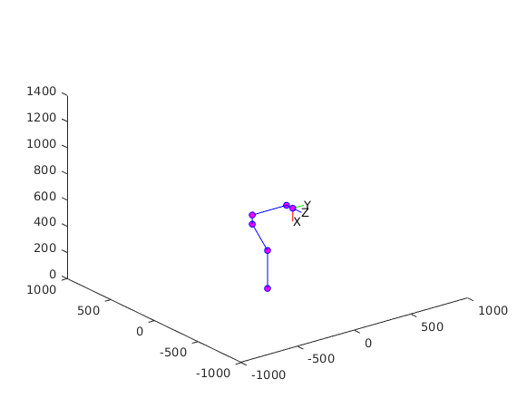 T = plotarmcad(0,-30,30,90,-90,-90);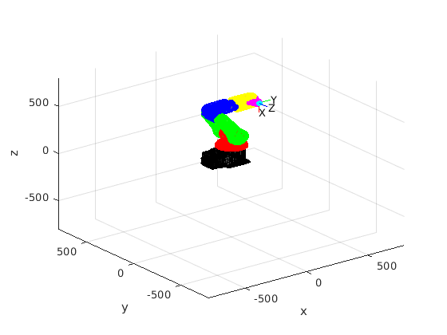
eul = rotm2eul(T(1:3,1:3), 'zyx'); eul = [rad2deg(eul(3)) rad2deg(eul(2)) rad2deg(eul(1))]; disp('End Effector Position in mm') disp(T(1:3,4)) disp('Angles in degrees') disp(eul)
End Effector Position in mm
167.0000
-72.0000
593.8269
Angles in degrees
90 90 0
%Comparing these configurations with the output from Robot Studio
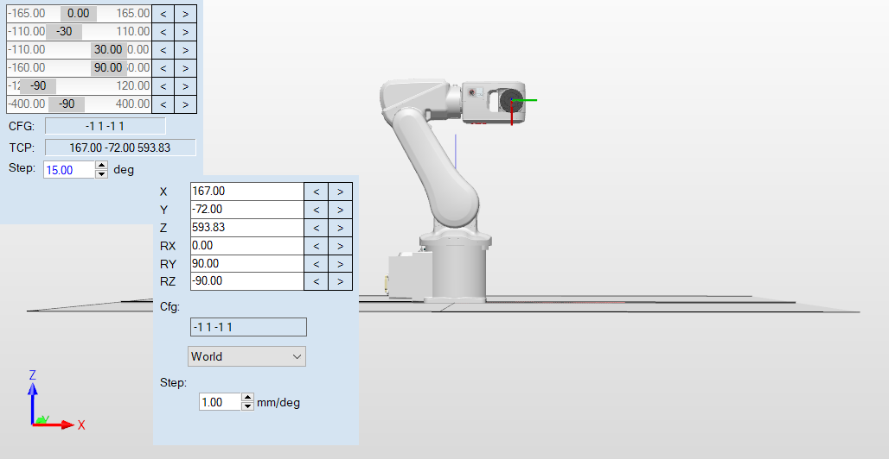
%This is essentially the same, as the image and our answer would give the %same rotation matrix disp(eul2rotm([deg2rad(0) deg2rad(90) deg2rad(-90)],'zyx')) disp(T(1:3,1:3))
0.0000 -1.0000 0.0000
0 0.0000 1.0000
-1.0000 -0.0000 0.0000
0 1 0
0 0 -1
-1 0 0
Thus there was no deviation between the result obtained from MATLAB and Robot Studio except that it has been rounded off in Robot Studio
end